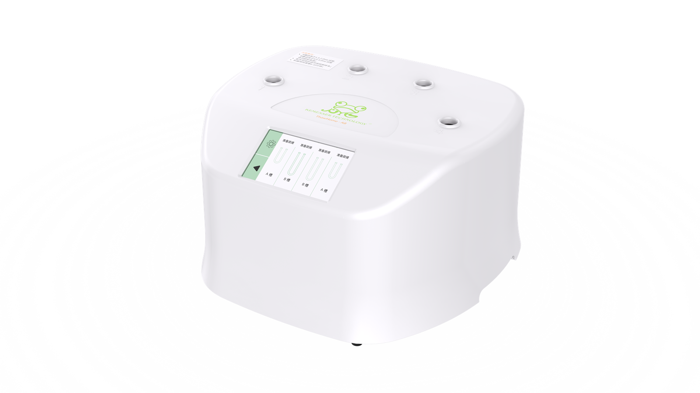

Water-free Thawing
Automated dry thawing avoids direct water contact, reducing contamination risk and simplifying operation.
TUBE THAWING
A four-channel water-free thawing system designed for independent operation, clear status display and efficient tube-format workflows.
Request Product Information
FUNCTIONS
Automated dry thawing avoids direct water contact, reducing contamination risk and simplifying operation.
Four independently controlled ports can thaw different samples simultaneously, improving throughput and operational flexibility.
Each channel displays its own status in real time for clear, direct process observation.
Process monitoring and alerts help operators respond promptly to abnormal conditions.
Four independent ports can thaw four different samples simultaneously, while automated thawing reduces manual handling errors.